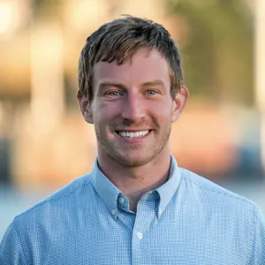

Selected work
Environmental data products.
Better ways to build them.
Open to consulting and full-time roles.
Climate risk and river forecasting

I build environmental data products and improve how teams deliver them. My work connects modeling, data pipelines, AI-assisted development, and explaining results to the people using them.
Focused on carbon removal, water, and energy. Based in White Salmon, Washington. Open to remote data science and AI consulting or a full-time role.
Download résumé ↗Python · SQL · pandas · NumPy · dbt · Snowflake · Git · CI/CD · Tableau · Machine learning · Time series